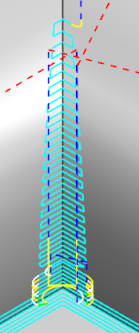
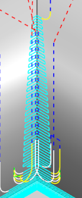

Edit the Flow Cut drive method as shown.
Non-steep Cutting group
Zlevel Cut Levels = Optimized.
Generate the operation.
Notice that the Optimized cut levels option outputs a more uniform depth per cut in the tool path. This option requires more processing time to calculate the optimized cut levels.
|
 |
 |
|
Constant |
Optimized |
Click OK to save the operation.